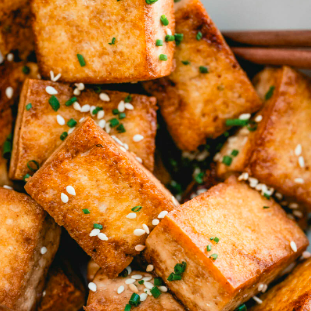

Fried Tofu

Tofu is soy milk that is turned into curds and pressed into blocks.
Let us clarify before we start: this is not crispy tofu! This pan fried tofu results in golden brown pieces that are crisped at the edges. It is not ultra crispy, but it has a lovely texture that we like even better. Sometimes crispy tofu can get too crunchy. Here are the basic steps for how to make pan fried tofu (or jump right to the recipe):
Ingredients:
- Tofu, firm or extra firm
- Olive Oil
- Toased Sesame Oil
- Smokey Soy Sauce or just Soy Sauce
Steps:
- Cut it into large cubes
- Place the tofu in cold oil. Then bring it up to medium heat and cook 5 to 6 minutes until one side is golden brown.
- Remove the pan from the heat to reduce spitting. Then flip the tofu
- Return to the heat. Cook another 5 to 6 minutes
- Add toasted sesame oil and soy sauce. Cook another 2 minutes on each side. Done!